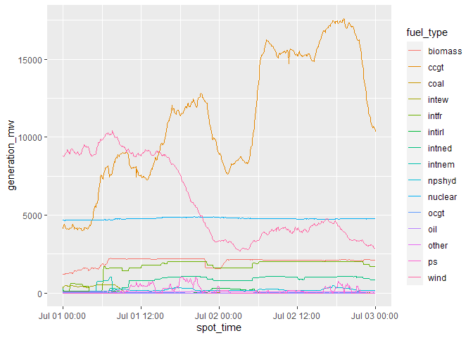

Overview
The goal of BMRSr is to provide wrapper functions to make use of the Balancing Mechanism Reporting System API easier for R users.
The Balancing Mechanism Reporting System (or BMRS) is a platform for energy-related data in the UK. Here, data relating to energy generation, demand, transmission and balancing services can all be accessed for free. The BMRS is therefore a platform for enthusiasts, academics and professionals to extract energy data for analysis and modelling. Also associated with BMRS is an API which allows for access to all the data items currently available through the UI.
This R package contains functions to help build the API requests, send them, retrieve the requested data and parse it.
Installation
You can install BMRSr from CRAN with:
install.packages("BMRSr")
You can install the development version of BMRSr from GitHub with:
devtools::install_github("BMRSr")
You’ll also need an API key. You can get this by registering on the ELEXON portal.
Usage
BMRSr contains functions that can be split into 4 main categories:
- Build
- Send & Receive
- Parse
- Utility
End-to-End
To perform a complete API request (build the call, send and receive the data, and then parse it), use the full_request() function.
full_request(data_item = "B1720", api_key = "api_key", # This is where your own API key goes settlement_date = "12 Jun 2018", period = "1", service_type = "csv")
Build
These functions build the URL for the API request. The main function build_call() is the one you’ll likely be calling, but all this does is call the appropriate build_x_call() function for the data item you’ve requested. For example:
build_call(data_item = "B1720", api_key = "your_api_key", # This is where your own API key goes settlement_date = "1 Jan 2018", period = "1", service_type = "csv") #> $url #> [1] "https://api.bmreports.com/BMRS/B1720/v1?APIKey=12345&SettlementDate=2018-01-01&Period=1&ServiceType=csv" #> #> $service_type #> [1] "csv" #> #> $data_item #> [1] "B1720"
actually calls
build_b_call(data_item = "B1720", api_key = "your_api_key", # This is where your own API key goes settlement_date = "1 Jan 2018", period = "1", service_type = "csv") #> $url #> [1] "https://api.bmreports.com/BMRS/B1720/v1?APIKey=12345&SettlementDate=2018-01-01&Period=1&ServiceType=csv" #> #> $service_type #> [1] "csv" #> #> $data_item #> [1] "B1720"
These functions return a list of three items:
- the url as a character string (
$url) - the service type/return format (
$service_type) - the data item (
$data_item)
The input parameters you provide will be checked against those that are valid for the data item you are requesting, however there is no check on whether you have provided (at least) the required parameters for the data item.
To see all the allowed input parameters for each type (not each data item), use ?build_[type]_call.
To see which input parameter you need for your data item, use get_parameters(your_data_item).
Send & Receive
This function - send_request() - sends the provided URL to the API and returns a response() object with the added attribute of data_item_type (one of “B Flow”, “Remit”, or “Legacy”). Config options can also be supplied via the config_options parameter as a named list, that will be passed to the httr::GET() function (implemented primarily for proxies and the like).
This function can be used with a premade url, however the user will also have to respecify the data item and service type (format) from the URL:
send_request( list( url = "https://api.bmreports.com/BMRS/B1720/v1?APIKey=12345&SettlementDate=2018-01-01&Period=1&ServiceType=csv", data_item = "B1720", service_type = "csv") )
Parse
This function - parse_response() - takes the response() object returned from the send_request() function, and parses the response base on the service_type parameter (whether it was “csv” or “xml”). CSVs return tibbles, and XMLs return lists. The returned CSVs from many of the calls contain unnecessary or incorrect data, so this parsing function will remove that data before returning a corrected response.
parse_response( send_request( list( url = "https://api.bmreports.com/BMRS/B1720/v1?APIKey=12345&SettlementDate=2018-01-01&Period=1&ServiceType=csv", data_item = "B1720", service_type = "csv") ) )
Utility
These functions support the functionality of the previous 3 groups of functions:
-
get_function()which returns the appropriatebuild_x_call()function needed for thebuild_call()function. -
check_data_item()ensures that the request is for a valid data item. -
get_parameters()returns a list with the allowed input parameters for the supplied data item. -
clean_date_columns()reformats date/time/datetime columns based on their column names. -
get_data_items()returns all valid data items. -
get_column_names()retrieves the column headings for a particular data item (Legacy only as B flow responses already have column headings). -
get_data_item_type()return the data item type of a particular data item. This is only really relevant to know whichbuild_x_call()to use.
Full example
Here’s a full example, using the package to return generation by fuel type data and then plotting it using ggplot2.
api <- "your_api_key_goes_here" # This is where your own API key goes #We're requesting the FUELINST data item here. #A full list of all the data items can be returned using the get_data_items() function #Find out which parameters we need to provide for the data item we've chosen... get_parameters("FUELINST") #> [1] "from_datetime" "to_datetime"
#Perform the full request and ask for a CSV back gen_data <- full_request(data_item = "FUELINST", api_key = api, from_datetime = "2019-07-01 00:00:00", to_datetime = "2019-07-03 00:00:00", service_type = "csv")
#Load the libraries for a bit more cleaning and then plotting... library(ggplot2, quietly = TRUE, warn.conflicts = FALSE) library(dplyr, quietly = TRUE, warn.conflicts = FALSE) head(gen_data) #> # A tibble: 6 x 19 #> record_type settlement_date settlement_peri~ spot_time ccgt #> <chr> <date> <dbl> <dttm> <dbl> #> 1 FUELINST 2019-07-01 2 2019-07-01 00:00:00 4101 #> 2 FUELINST 2019-07-01 3 2019-07-01 00:05:00 4354 #> 3 FUELINST 2019-07-01 3 2019-07-01 00:10:00 4388 #> 4 FUELINST 2019-07-01 3 2019-07-01 00:15:00 4290 #> 5 FUELINST 2019-07-01 3 2019-07-01 00:20:00 4237 #> 6 FUELINST 2019-07-01 3 2019-07-01 00:25:00 4176 #> # ... with 14 more variables: oil <dbl>, coal <dbl>, nuclear <dbl>, #> # wind <dbl>, ps <dbl>, npshyd <dbl>, ocgt <dbl>, other <dbl>, #> # intfr <dbl>, intirl <dbl>, intned <dbl>, intew <dbl>, biomass <dbl>, #> # intnem <dbl> #Change the fuel types from columns to a grouping gen_data <- gen_data %>% dplyr::mutate(settlement_period = as.factor(settlement_period)) %>% tidyr::gather(key = "fuel_type", value = "generation_mw", ccgt:intnem) #Make a line graph of the different generation types ggplot2::ggplot(data = gen_data, aes(x = spot_time, y = generation_mw, colour = fuel_type)) + geom_line()
